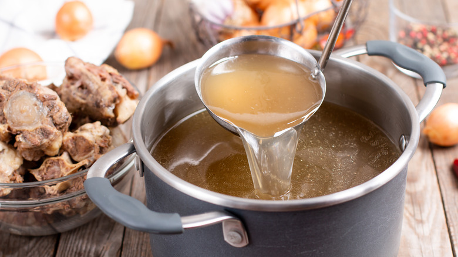

Instructions: For preparation:
1
Soak dried pork skin and wood ear in water till
softens and cut into pieces (20 minutes)
softens and cut into pieces (20 minutes)
2
Marinate the shredded pork and pork live
rusing Chinese cooking wine, salt and starch (set
aside for 10 minutes)
rusing Chinese cooking wine, salt and starch (set
aside for 10 minutes)
3
Cut tomatoes into slices & bok choy into pieces

4
Stir fry the pork liver or sausages until it
changes color For cooking:
changes color For cooking:
5
Prepare another pot of boiling water and cook
the noodles
the noodles
6
Put broth in the stir-fry pot

7
Put in everything besides shredded pork & liver

8
Put in shredded pork until it's cooked
Put in pork liver and wait till boil
Add a pinch of salt and chili oil for seasoning
Put in pork liver and wait till boil
Add a pinch of salt and chili oil for seasoning